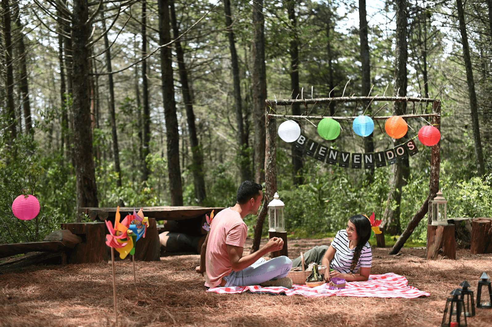

Alberga una de las mayores colecciones de artes decorativas de Colombia. Es uno de los lugares favoritos para las personas amantes del arte, la cultura y la tradición.
Ver másConocer el parque de Berrío es muy importante debido que se encuentran varios espacios importantes, tales como: La Plaza Botero, El Museo de Antioquia y El Palacio de la Cultura.
Ver másEl Parque Arví, también conocido como Parque Regional Ecoturístico, es una riqueza natural de Medellín. Fue declarado reserva forestal protectora en 1970. Es un espacio público que ofrece una gran variedad de experiencias para todos los gustos. Ofrece la posibilidad de descubrir la magia de su riqueza cultural, ambiental, el emprendimiento de su gente y su patrimonio arqueológico.
Ver másCatalogada como un must-see en Colombia por un sinnúmero de guías de viajes en internet, La Comuna 13 de Medellín sorprende por su historia de resiliencia y transformación social.
Ver másDescubre cerca de Medellín fascinantes lugares colmados de biodiversidad, cultura y tecnología. Encuentra los secretos detrás de cada historia, cada obra y cada lugar de su respectivo pueblo. Entre los más destacados son:Cauca Viejo, Jardín, Guatapé y El Peñol, Santa Fé de Antioquia, Jericó, San Pedro de los Milagros, entre muchos otros.
Ver más